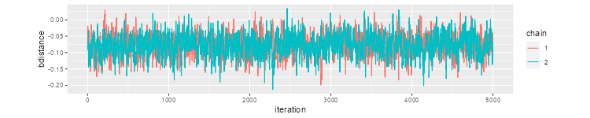

JAGS is “Just Another Gibbs Sampler”, a program for the analysis of
Bayesian models using MCMC. It uses essentially the same model language
as WinBUGS or OpenBUGS. It works closely with R via rjags,
so that’s what I will use here. Let’s try it.
Start by downloading JAGS from here. Then
in R install.packages("rjags"), which will also install
coda.
We start by writing our model and saving it to a file, here
hosp.bugs. This is exactly the same code used for WinBUGS
here.
model {
# N observations
for (i in 1:N) {
hospital[i] ~ dbern(p[i])
logit(p[i]) <- bcons + bloginc*loginc[i] + bdistance*distance[i] +
bdropout*dropout[i] + bcollege*college[i] + u[group[i]]
}
# M groups
for (j in 1:M) {
u[j] ~ dnorm(0,tau)
}
# Priors
bcons ~ dnorm(0.0,1.0E-6)
bloginc ~ dnorm(0.0,1.0E-6)
bdistance ~ dnorm(0.0,1.0E-6)
bdropout ~ dnorm(0.0,1.0E-6)
bcollege ~ dnorm(0.0,1.0E-6)
# Hyperprior
tau ~ dgamma(0.001,0.001)
}Next we need the data, which need to be in a list. We will read them
into R just like we did here, and then produce a
list with the number of observations (N) and groups (M), the outcome
hospital and the predictors loginc,
distance, dropout and college. We
also need mother, which groups the births.
> hosp <- read.table("https://data.princeton.edu/pop510/hospital.dat",
+ header = FALSE)
> names(hosp) <- c("hosp","loginc","distance","dropout","college","mother")
> hosp_data <- list(N = 1060, M = 501, hospital = hosp$hosp,
+ loginc=hosp$loginc, distance=hosp$distance, dropout=hosp$dropout,
+ college=hosp$college, group=hosp$mother)
The other thing we need are initial values. We use two lists, one for each chain, with values scattered around the mle’s. The random effects are generated by JAGS.
> hosp_inits= list( + list(bcons=-2.5, bloginc=0.50, bdistance=-0.05, bdropout=-1.6, bcollege=0.7, tau=0.8), + list(bcons=-2.8, bloginc=0.40, bdistance=-0.08, bdropout=-1.4, bcollege=0.9, tau=1.2) + )
We are now ready. We load the rjags library and then
compile the model by calling the jags.model() function
> library(rjags)
> model <- jags.model("hosp.bugs", data = hosp_data, inits =hosp_inits, n.chains=2)
Compiling model graph
Resolving undeclared variables
Allocating nodes
Graph information:
Observed stochastic nodes: 1060
Unobserved stochastic nodes: 507
Total graph size: 9884
Initializing model
With the model ready we run a burn-in of 1000 iterations using
update()
> update(model, n.iter = 1000)
We can now run a further 5000 iterations monitoring the parameters of
interest. We use coda.samples(), which is a wrapper around
jags.samples().
> samples <- coda.samples(model,
+ variable.names = c("bcons","bloginc","bdistance","bdropout","bcollege","tau"),
+ n.iter = 5000)
We can then summarize our samples, an object of class
mcmc.list.
> summary(samples)
Iterations = 2001:7000
Thinning interval = 1
Number of chains = 2
Sample size per chain = 5000
1. Empirical mean and standard deviation for each variable,
plus standard error of the mean:
Mean SD Naive SE Time-series SE
bcollege 1.05639 0.41282 0.0041282 0.0111317
bcons -3.38305 0.50784 0.0050784 0.0508158
bdistance -0.07783 0.03281 0.0003281 0.0009328
bdropout -2.04407 0.26939 0.0026939 0.0110984
bloginc 0.56473 0.07779 0.0007779 0.0072873
tau 0.63297 0.20605 0.0020605 0.0165996
2. Quantiles for each variable:
2.5% 25% 50% 75% 97.5%
bcollege 0.2724 0.77612 1.04772 1.32113 1.89939
bcons -4.4508 -3.70556 -3.35383 -3.02013 -2.49771
bdistance -0.1419 -0.09954 -0.07816 -0.05561 -0.01281
bdropout -2.5991 -2.21880 -2.02912 -1.85405 -1.54798
bloginc 0.4204 0.51167 0.56040 0.61474 0.72825
tau 0.3291 0.48709 0.59592 0.74515 1.13837
The class also has a plot() method to produce the usual
trace and density plots. R will pause between plots, but R Studio does
not.
A good way to do a trace plot is to change the aspect ratio. I had good results with the following code
> library(dplyr)
> library(ggplot2)
> mcmc <- data.frame(rbind(samples[[1]], samples[[2]]))
> mcmc <- mutate(mcmc,
+ chain=factor(rep(c(1,2),c(5000,5000))),
+ iteration = rep(1:5000, 2))
> r <- 5000 / (5*range(mcmc$bdistance) %*% c(-1,1) )
> ggplot(mcmc, aes(iteration, bdistance, color=chain)) + geom_line() +
+ coord_fixed(ratio=r)
> ggsave("jagsFig1.png", width=500/72, height=400/72, dpi=72)
Which produces this plot:

Lunn D, Spiegelhalter D, Thomas A, Best N. (2009) The BUGS project: Evolution, critique and future directions. Statistics in Medicine, 28:3049-67.
Plummer M, Best N, Cowles K, Vines K (2006). CODA: Convergence Diagnosis and Output Analysis for MCMC, R News, 6:7-11. CRAN
Plummer, M, A. Stukalov, and M. Denwood (2022). Bayesian Graphical Models using MCMC. An R vignette. CRAN